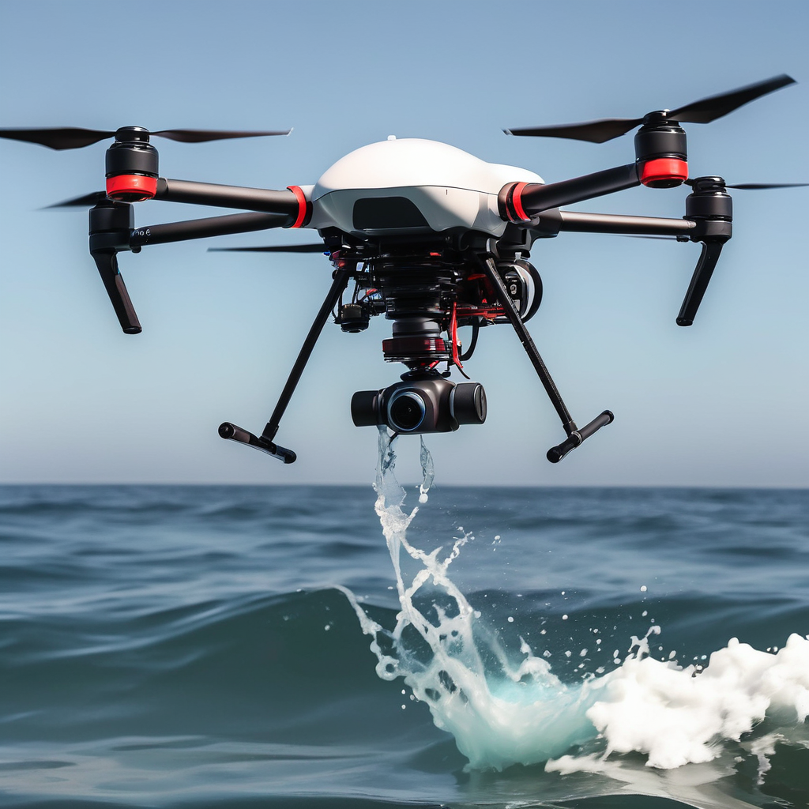

Veja a real situação dos oceanos
A poluição dos mares está aumentando a cada ano, ameaçando a vida marinha e a saúde dos ecossistemas oceânicos. A AquaDrone, com seu protótipo de drone especializado em colher dados da água, está comprometida em combater esse problema, fornecendo informações precisas sobre o grau de poluição e ajudando na preservação dos oceanos.
Sobre nós!
- Conscientizar
- Proteger a vida marinha
-
 Reduzir o lixo nos oceanos
Reduzir o lixo nos oceanos
-
 Viabilidade Econômica
Viabilidade Econômica

Conheça o nosso protótipo!
O nosso protótipo de drone é uma ferramenta revolucionária no combate à poluição marítima. Equipado com sensores avançados, ele é capaz de coletar dados precisos da água, ajudando na preservação dos oceanos.
Saiba Mais